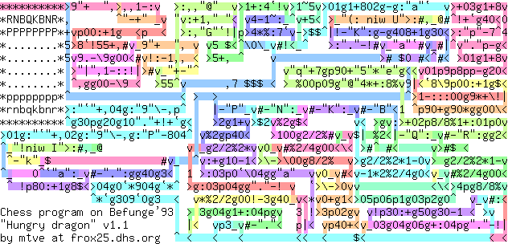

Befunge to ETA converter
I got a little bit interested in Chris Pressey's Befunge language, particularly after one crazy hacker wrote a chess program in it.
I thought that ETA should run chess too. But rather than write a new chess program in ETA, which I believe would not be too hard with my ETA Builder stuff, I thought it would be a bit of a challenge to run Dmitri's Befunge chess program in ETA. So I invented a Befunge to ETA compiler.
It's written in Ruby, and takes Befunge source on the standard input, and produces ETA code on the standard output. Oh, and it gives you a commentary of what it's up to on the standard error stream. Note that you do need to also download ETA Builder.
After I'd built the compiler, I could run any other Befunge programs - including the wonderful Hunt the Wumpus implementation by Wim Rijnders. This is the largest Befunge program I know of.
- ETA to Befunge converter
- Befunge chess source*
- Compiled ETA chess code - gzip or winzip
- Befunge Hunt the Wumpus source
- Compiled ETA wumpus code - gzip or winzip
* Note that this version of chess.bef is modified from mtve's original in order to show a progress bar when the computer makes a move. This is because the ETA version is really pretty slow, and it's really nice to see that it is actually doing something. I recommend using my optimising ETA interpreter to run it as fast as possible!